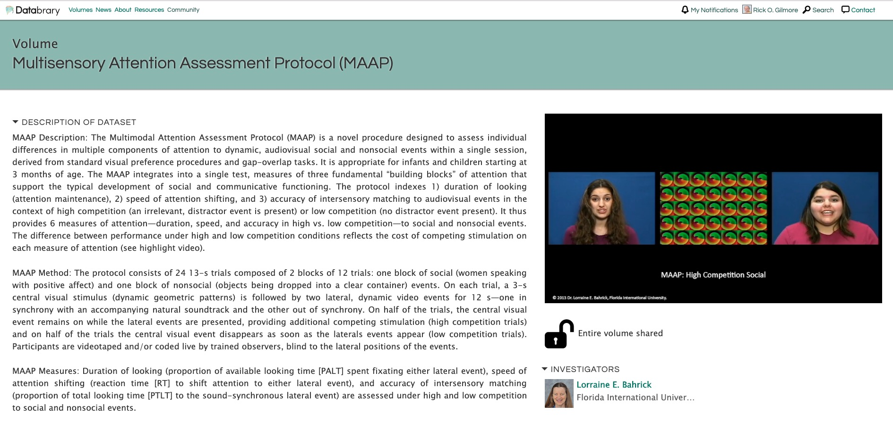

Video as Data & Documentation
Rick O. Gilmore
2019-05-21 11:49:13
Preliminaries


Overview
- Video as data
- Video as documentation
- Sharing ethically & securely with Databrary
- Accelerating discovery
Video as data

If a picture is worth 1,000 words…
A video is worth…
…a paper in Science
Video…
- Captures (& preserves)
- Shows (& helps tell…)
- Expands the scope of inquiry
- Provides opportunities for reuse
Video as documentation


Even audio
Shared video & audio recordings
- Make research more transparent
- Bolster the reproducibility of procedures
- Accelerate the adoption of new research techniques
- Strengthen findings
- Maximize public investments in research
Sharing video ethically & openly
Video must be protected
- Faces, voices
- Home interiors
- Behaviors that may embarrass participants
Open sharing advances discovery
- Citation expected, but
- No requirement for co-authorship
- No pre-approval of research questions
Databrary
- Requires researchers secure participant permission to share
- Requires IRB/ethics board approval to share (but not to browse or show for non-research purposes)
- Restricts access to authorized researchers
Permission to share
Restricting access
- Researchers at institutions
- Formalized by an institutional agreement
- Protects participants, researchers, & institutions
Standardized levels of sharing


Accelerating discovery
Need
- Annotation tools
- More (bigger, denser, diverse) data
- Platforms for discovery
- \(n=900\) infant/mother dyads, \(n=300\) 12-, 18-, and 24-month-olds
- Demographics, health status, media use, temperament
- Modified MB-CDI
- Open protocol, video documentation
Platforms for discovery
| Asian | Black or African American | Unknown or not reported | White | ||
|---|---|---|---|---|---|
| 7 | 0 | 0 | 0 | 0 | |
| Female | 0 | 112 | 341 | 4 | 209 |
| Male | 0 | 111 | 410 | 2 | 155 |

databraryapi::login_db(email = "rogilmore@psu.edu")
play_session_id <- 26295
play_vol_id <- 444
list_assets_in_session(vol_id = play_vol_id, session_id = play_session_id) %>%
select(name, asset_type, asset_id) %>%
knitr::kable()## Login successful.## [1] TRUE| name | asset_type | asset_id |
|---|---|---|
| childcare | Comma-separated values | 159177 |
| locomotion | Comma-separated values | 117092 |
| child-birth | Comma-separated values | 116791 |
| family | Comma-separated values | 116790 |
| sleep | Comma-separated values | 116789 |
| language-exposure | Comma-separated values | 116787 |
# Load language exposure data
lang_exp <- databraryapi::read_csv_data_as_df(session_id = play_session_id,
asset_id = 116787)
# Plot
lang_exp %>%
ggplot(.) +
aes(x = language, fill = language) +
facet_grid(exposure_context ~ .) +
geom_histogram(stat='count')## Warning: Ignoring unknown parameters: binwidth, bins, padvol_254_assets <- list_assets_in_session(254, 14514)
vol_254_assets %>%
filter(mimetype %in% c('video/mp4', 'application/vnd.datavyu')) %>%
select(name, asset_type)## name asset_type
## 1 NYU019 Datavyu
## 2 NYU019_Phone Questionnaire MPEG-4 video
## 3 NYU019_1-Hour Free Play MPEG-4 video
## 4 NYU019_1-Hour Free Play (View of Experimenter) MPEG-4 video
## 5 NYU019_Solitary Play MPEG-4 video
## 6 NYU019_Dyadic Play MPEG-4 video
## 7 NYU019_Solitary Play & Dyadic Play (View of Experimenter) MPEG-4 video
## 8 NYU019_At-Home Questionnaires (View of Experimenter) MPEG-4 video
## 9 NYU019_House Walkthrough MPEG-4 video
## 10 NYU019_House Walkthrough (View of Experimenter) MPEG-4 video# Pick Datavyu file and download
dv_info <- filter(vol_254_assets, asset_type == "Datavyu")
dv_dir <- databraryapi::download_datavyu(vol_id = dv_info$vol_id,
session_id = dv_info$session_id,
asset_id = dv_info$asset_id)
# Convert to CSV
databraryapi::extract_dv(in_dir = dv_dir, auto_write_over = TRUE)
databraryapi::dv_to_csv(dv_dir)
# Load CSV and print out
dv_fn <- list.files(dv_dir, '\\.csv$', full.names = TRUE)
(vol_254_14514_dv <- read_csv(dv_fn))# Pick Datavyu file and download
dv_info <- filter(vol_254_assets, asset_type == "Datavyu")
dv_dir <- databraryapi::download_datavyu(vol_id = dv_info$vol_id,
session_id = dv_info$session_id,
asset_id = dv_info$asset_id)## Creating directory tmp/## Successful HTML GET query.## Content-type is application/vnd.datavyu## File name unspecified. Generating unique name.## Downloading Datavyu file as:
## tmp/254-14514-63635-2019-05-21-1150-15.opf# Convert to CSV
databraryapi::extract_dv(in_dir = dv_dir, auto_write_over = TRUE)## [1] "tmp"databraryapi::dv_to_csv(dv_dir)## [1] "tmp/254-14514-63635-2019-05-21-1150-15.csv"# Load CSV and print out
dv_fn <- list.files(dv_dir, '\\.csv$', full.names = TRUE)
(vol_254_14514_dv <- read_csv(dv_fn))## Parsed with column specification:
## cols(
## code = col_character(),
## onset = col_time(format = ""),
## offset = col_time(format = ""),
## code.value = col_character()
## )## # A tibble: 6,145 x 4
## code onset offset code.value
## <chr> <time> <time> <chr>
## 1 transcribe 00'03" 00'03" m,hi
## 2 transcribe 00'06" 00'07" m,you have to keep that on
## 3 transcribe 00'07" 00'08" m,ok?
## 4 transcribe 00'09" 00'10" m,you wanna play with mickey?
## 5 transcribe 00'18" 00'19" b,what
## 6 transcribe 00'20" 00'20" b,b
## 7 transcribe 00'22" 00'23" b,b
## 8 transcribe 00'23" 00'24" b,b
## 9 transcribe 00'24" 00'25" m,thats not mickey
## 10 transcribe 00'25" 00'26" m,wheres mickey?
## # … with 6,135 more rowsNext steps…
Register for Databrary access
Download, test, and help me improve the [databraryapi] package
Secure permission to share from research participants
Collect, upload, & share video and audio recordings
Shared video data & documentation will
- Make the behavioral sciences more robust & reproducible
- Accelerate discovery
Thank you

https://gilmore-lab.github.io/2019-06-MacWhinney-Symposium/databrary-workshop/